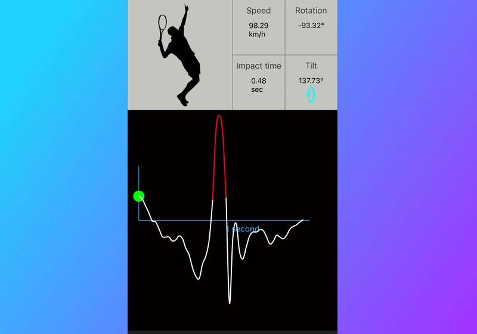
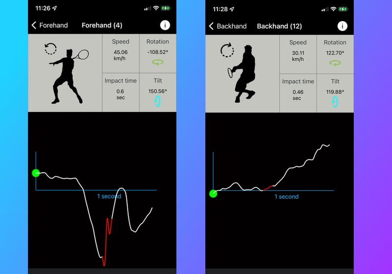

Apple Watch Sensors
Your Apple Watch has built-in hardware sensors (Accelerometer and Gyroscope) that can be used to track your arm movement. The sensors can sense your wrist rotation, orientation and acceleration speed provided you wear the Apple Watch on your hitting hand and set the Watch Orientation to the same hand. TennisKeeper uses the motion data from these sensors to identify and classify a shot.
How is a swing detected?
Your Apple Watch provides motion updates at a 50 hertz cadence. For a swing to be detected and classified, it must meet the minimum swing speed and rotation angles within the second. If you make a swing and you think it was not counted, or counted incorrectly, it is likely your acceleration is too slow, or your wrist rotation (i.e. your swing path) is too short within the 50 Hz window. In that case, you can calibrate your swings settings in TennisKeeper and set your own minimum values. See the Swing Calibration article for more information.
The Metrics of a Swing
The Device Motion framework fuses the data from your Apple Watch accelerometer and gyroscope to provide four distinct measurements: user acceleration, rotation rate, attitude, and gravity. TennisKeeper uses these properties to formulate the metrics of a swing.
Speed
This measures how fast your hand is swinging using the user acceleration property. Note that this is not your racquet speed. However, different users can swing their hand at very different speed.
Swing Speed from two different usersRotation
This measures your wrist rotation using the rotation rate and gravity. Depending on whether you wear the watch on your left (for left-handed player) or right (for right-handed player) wrist, the direction of rotation determines if the swing will be classified as a forehand vs a backhand shot.
Right-Handed Player
- A right-handed player forehand is a counter-clockwise rotation. This means the rotation angles is a negative numbers.
- A right-handed player backhand is a clockwise rotation. This means the rotation angles is a positive number.
Left-Handed Player
- A left-handed player forehand is a clockwise rotation. This means the rotation angles is a positive number.
- A left-handed player backhand is a counter-clockwise rotation. This means the rotation angles is a negative number.
Impact Time
This is the time when you impact the ball. TennisKeeper determines your impact time based on your swing speed. It is the time when your reached the maximum acceleration in your swing.
You can visualize the impact time in TennisKeeper detail swing graph. The point where you reached maximum acceleration is marked with a red line on your swing path. A perfect impact should be somewhere in the middle of your swing (within the one second window) because ideally you start slow, accelerate, and decelerate. If your impact point is late, it might be because of your preparation.
Impact TimeTilt
This measures the orientation (aka Euler angles) of the Watch using the attitude property. It is used to assist in the classification of a swing that may be a serve, an overhead or even a high swinging volley. In TennisKeeper, they are collectively refer to as a Smash. A swing is classifed as a Smash if one of the following criteria is met:
- If the tilt angle is bigger than the default (i.e. 190.79°)
- If there is a rapid hand rising
The easiest way to see if there is a rapid hand rising is to look at TennisKeeper's 3D Swing Path and the 2D Time Sequence graph view. Both views rendered the Rotation data in a graph so that you can understand your wrist motion.
3D Swing Path
After you contact the ball, your arm should follow through and complete the motion. This 3D view allows you to visualize the circular path.
- A smooth line is a better swing because it indicates that your wrist is steady without a lot of random wrist movement that can potentially reduce the speed or consistency of your shot.
- The red line indicates when you impact the ball. It is best if the impact (i.e. maximum acceleration) is somewhere in the middle.
- The green circle indicates your wrist location when you start your swing. Start and End Location of your Swing
 Smooth vs Jagged Swing
Smooth vs Jagged Swing
2D Time Sequence
While the 3D Swing Path view can be thought of as artist's rendition to help you understand your swing path motion, the 2D Time Sequence view renders the same data technically in the form of a traditional 2D chart. Your Apple Watch provides motion updates at a 50 hertz. This means we are acquiring 50 sample points within a 1 second window. The 2D Time Sequence view shows your wrist movement (Rotation) across this 1 second time window.
- In this swing, we can see a rapid hand movement between a few points. Therefore, it is classified as a Smash even though the Tilt is smaller than the default.  Smash - Rapid Hand Rising within a few points
- By observing the positive vs negative values along this 1 second window, you can understand why a particular swing is counted as a forehand vs a backhand based on your wrist rotation.  Forehand vs Backhand Rotation for a Right-Handed Player
Analyze each swing shot with TennisKeeper and Apple Watch.
While TennisKeeper may not accurately classify all your swings shots, it provides a base line for you to analyze them in a consistent way.
For each swing, see how you hit the ball. Do you have a clean contact? Is your swing smooth or jittery? Drill into your game patterns and see how your swing speed evolve over time.